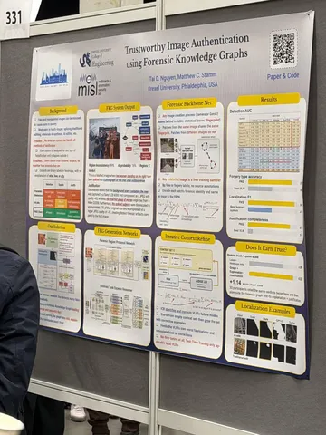
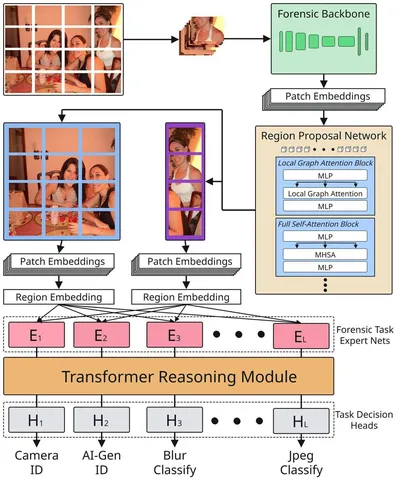
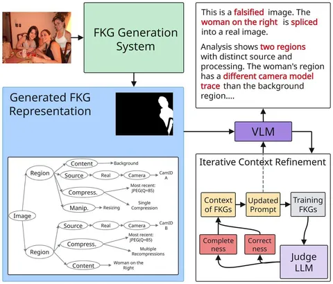

На ECCV 2026 прослеживались два основных направления по детекции AIGI (AI-generated images):
• обобщающие подходы, которые пытаются строить решения независимо от конкретных генераторов, чтобы не переучиваться под новые;
• объясняемые подходы на базе VLM, где модель отвечает, почему изображение поддельное.
Разбираемая статья интересна тем, что фокусируется сразу на обоих эти обоих направлениях.
Авторы обучают self-supervised-эмбеддер на неразмеченных фотографиях. Получают fingerprint изображения, который отражает не семантику или содержание, а низкоуровневые особенности, связанные с тем, как изображение было сформировано. Для этого эмбеддинги патчей одной фотографии сближают, а разных фотографий — отдаляют.
Дальше картинка режется на патчи, для каждого считается такой отпечаток, и патчи с похожими отпечатками склеиваются в области.
Потом эмбеддинги патчей области усредняются, и отдельные модели-эксперты (MLP) предсказывают источник (камера или генератор), постобработку и сжатие (JPEG-параметры), а трансформер-ризонер сверху увязывает эти предсказания между собой.
Всё собирается в граф: изображение → области → источник, постобработка, сжатие.
В самом конце подключается VLM, которая переводит граф в текстовое описание с проверкой, что каждое утверждение опирается на факты из графа.
Такой подход позволяет единой системой находить и обосновывать разные манипуляции: сплайсинг (вставка одного изображения в другое), классическую локальную обработку (блюр), локальное AI-редактирование и полностью сгенерированные изображения. Например, разные источники у областей выдают сплайсинг, смесь камерных и синтетических отпечатков — AI-редактирование, а отсутствие камерных отпечатков вовсе — полную генерацию.
#YaECCV2026
Разбор подготовил
CV Time


